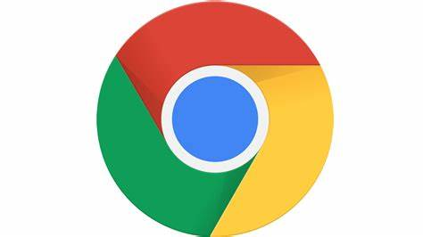

Lanzado por Google a finales de 2008, el navegador Chrome aglutina al 59% de los usuarios y está disponible para Windows, MacOs y Linux, se caracteriza por su velocidad y simplicidad y se afirma que es el más rápido y estable de los navegadores. Integra opciones de búsqueda en Google en la barra de direcciones (donde se indica el URL a desplegar) y su nivel de seguridad es alto en comparación a Internet Explorer. Este navegador es muy popular por su interfaz sencilla, minimalista y por todas las opciones de sincronización con herramientas de Google que facilita el trabajo y la navegación.
Firefox es una aplicación abierta de la fundación Mozilla y heredera de Netscape, el navegador que dominó el mercado en los años 90. Firefox se ofrece en versiones para Windows, MacOS, Linux y otras plataformas. Es un navegador robusto y se afirma que Firefox es menos vulnerable a problemas de seguridad que el Explorer. Su carácter abierto le atrae la simpatía de muchos cibernautas y democratiza el empleo de Internet.
Microsoft Edge presentado oficialmente el 21 de enero de 2015, ha reemplazado a Internet Explorer como el navegador predeterminado en Windows 10. Internet Explorer estuvo instalado durante un tiempo más en Windows 10 para mantener la compatibilidad con sitios web antiguos y sitios de intranet que requieren ActiveX y otras tecnologías web heredadas de Microsoft. Según Microsoft, el desarrollo de nuevas características para Internet Explorer ha cesado. Pero no significaba que no continuará manteniéndose como parte de la política de soporte para las versiones de Windows con las que está incluido.